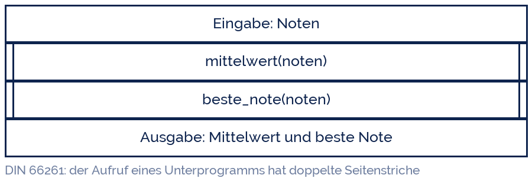

sasint
sasint
Good morning!
Nur das Schöne wird die Welt retten!
Fjodor Dostojewski
Nicht verzagen, Doc Alvers fragen!
Informatik — FOS 12
Modularisierung
Große Probleme zerlegen: Funktionen mit Parametern und Rückgabewerten
Nicht verzagen, Doc Alvers fragen!
Kapitel 01
Teile und herrsche
Ein großes Problem ist eine Menge kleiner Probleme
Nicht verzagen, Doc Alvers fragen!
Warum ein Programm zerlegt wird
Ein 300-Zeilen-Block ist nicht prüfbar: niemand hat ihn im Kopf
Zerlegen heißt: jedes Teilproblem einzeln lösen, einzeln testen, einzeln benennen
Ein Teil, das funktioniert, kann man wiederverwenden — auch im nächsten Projekt
Im Team arbeitet jeder an einem Teil, ohne dem anderen ins Programm zu greifen
Und beim Suchen: ein Fehler steckt in einer Funktion, nicht irgendwo in 300 Zeilen
Nicht verzagen, Doc Alvers fragen!
Vier Gründe, vier Wirkungen
| Grund | ohne Zerlegung | mit Zerlegung |
|---|---|---|
| Verständlichkeit | 300 Zeilen am Stück lesen | acht Namen lesen, dann gezielt nachsehen |
| Testbarkeit | nur das Ganze testbar | jede Funktion einzeln prüfbar |
| Wiederverwendung | Code kopieren (und Fehler mit) | einmal schreiben, überall aufrufen |
| Änderung | an fünf Stellen nachziehen | an einer Stelle ändern |
Das Prinzip heißt Teile und herrsche (divide et impera) und ist älter als der Computer
Kernidee: eine Funktion, eine Aufgabe — der Name sagt, welche
Nicht verzagen, Doc Alvers fragen!
Kapitel 02
Funktionen
Definieren, aufrufen, zurückgeben
Nicht verzagen, Doc Alvers fragen!
Die erste eigene Funktion
def mittelwert(werte): # Definition, laeuft noch nicht
summe = 0
for w in werte:
summe = summe + w
return summe / len(werte) # Ergebnis zurueckgeben
noten = [2, 1, 3, 2]
m = mittelwert(noten) # Aufruf - jetzt laeuft sie
print(f'Mittelwert: {m:.2f}') # Mittelwert: 2.00
print(mittelwert([1, 5])) # dieselbe Funktion, andere Daten: 3.0Nicht verzagen, Doc Alvers fragen!
Die Fachbegriffe dazu
| Begriff | im Beispiel | bedeutet |
|---|---|---|
| Definition | def mittelwert(werte): | die Funktion wird bekannt gemacht |
| Parameter | werte | Platzhalter in der Definition |
| Argument | noten | der echte Wert beim Aufruf |
| Rückgabewert | return summe / len(werte) | das Ergebnis, das zurückkommt |
| Aufruf | mittelwert(noten) | hier wird sie ausgeführt |
Parameter steht in der Definition, Argument beim Aufruf — der Klassiker in der Klausur
Ohne return gibt eine Funktion None zurück: sie tut etwas, liefert aber nichts
return beendet die Funktion sofort — alles danach läuft nicht mehr
Nicht verzagen, Doc Alvers fragen!
Aufrufe im Struktogramm
Der Kasten mit den doppelten Seitenstrichen ist ein Unterprogrammaufruf
Was darin passiert, steht in einem eigenen Struktogramm
Das Hauptstruktogramm bleibt dadurch kurz und lesbar
Genau so entsteht ein Modul: außen der Name, innen die Lösung

Nicht verzagen, Doc Alvers fragen!
Parameter, Standardwerte, mehrere Rückgaben
def note(punkte, maximum=60): # maximum hat einen Standardwert
prozent = punkte / maximum * 100
if prozent >= 92: return 1
if prozent >= 81: return 2
if prozent >= 67: return 3
if prozent >= 50: return 4
if prozent >= 30: return 5
return 6
def spanne(werte): # zwei Werte auf einmal zurueckgeben
return min(werte), max(werte)
print(note(47)) # 2 - maximum bleibt 60
print(note(47, 50)) # 1 - jetzt von 50 Punkten
kleinste, groesste = spanne([3, 1, 4])Nicht verzagen, Doc Alvers fragen!
Kapitel 03
Sichtbarkeit
Was in der Funktion passiert, bleibt in der Funktion
Nicht verzagen, Doc Alvers fragen!
Lokal und global
def rechne():
ergebnis = 42 # lokal - lebt nur waehrend des Aufrufs
print(ergebnis)
rechne() # 42
print(ergebnis) # NameError: name 'ergebnis' is not defined
zaehler = 0 # global - im ganzen Programm sichtbar
def zeige():
print(zaehler) # lesen: geht
def erhoehe():
zaehler = zaehler + 1 # schreiben: UnboundLocalErrorNicht verzagen, Doc Alvers fragen!
Die Regel dahinter
Eine Variable, die in einer Funktion entsteht, ist lokal — draußen kennt sie niemand
Das ist ein Vorteil: zwei Funktionen dürfen dieselben Namen benutzen, ohne sich zu stören
Globale Variablen kann man lesen, aber nicht ohne Weiteres beschreiben
Guter Stil: Werte über Parameter hinein, Ergebnisse über return heraus — keine globalen Variablen
Damit ist eine Funktion eine Black Box: Eingabe rein, Ergebnis raus, keine Nebenwirkungen
Nicht verzagen, Doc Alvers fragen!
Werte gehen über Parameter hinein und über return wieder hinaus. Alles andere macht aus einer Funktion eine Falle.
Merksatz
Nicht verzagen, Doc Alvers fragen!
Kapitel 04
In der Praxis
Ein Programm sauber aufteilen
Nicht verzagen, Doc Alvers fragen!
Das Notenprogramm, modular
def einlesen(anzahl):
werte = []
for i in range(anzahl):
werte.append(int(input(f'Punkte {i+1}: ')))
return werte
def mittelwert(werte):
return sum(werte) / len(werte)
def note(punkte, maximum=60):
return 6 - min(5, int(punkte / maximum * 100 // 20))
def bericht(werte):
print(f'{len(werte)} Arbeiten, Schnitt {mittelwert(werte):.1f} Punkte')
print(f'beste {max(werte)}, schlechteste {min(werte)}')
punkte = einlesen(5)
bericht(punkte)Nicht verzagen, Doc Alvers fragen!
Woran man eine gute Funktion erkennt
| Regel | gut | schlecht |
|---|---|---|
| Eine Aufgabe | mittelwert(werte) | alles_machen(daten) |
| Sprechender Name | beste_note(liste) | f2(x) |
| Kurz | unter 20 Zeilen | 80 Zeilen mit vier Themen |
| Keine Nebenwirkungen | gibt zurück | verändert heimlich Globales |
| Testbar | gleiche Eingabe, gleiches Ergebnis | hängt von der Tageszeit ab |
Faustregel: Wenn der Name ein und enthält, sind es zwei Funktionen
Ein guter Name macht den Kommentar überflüssig
Nicht verzagen, Doc Alvers fragen!
Fun Facts: Funktionen
David Wheeler erfand 1951 den Unterprogrammaufruf — der Wheeler Jump war die erste „Bibliothek“ der Welt
Von ihm stammt auch der Satz: „Jedes Problem der Informatik löst man mit einer weiteren Indirektionsebene“
Die NASA-Programmierrichtlinien begrenzen Funktionen auf 60 Zeilen — eine Druckseite
Copy & Paste ist der häufigste Weg, wie sich ein Fehler in einem Programm vermehrt
Das Wort Bibliothek für Codesammlungen ist älter als der Personal Computer — Lochkartenstapel lagen wirklich in Schränken
Nicht verzagen, Doc Alvers fragen!
Eure Aufgabe: zerlegen und wiederverwenden
Nehmt euer Notenstatistik-Programm aus Woche 16 und zerlegt es in Funktionen
Mindestens: einlesen(), mittelwert(), beste(), ausgabe()
Schreibt eine Funktion ist_prim(zahl), die True oder False zurückgibt — und nutzt sie in einer Schleife von 1 bis 100
Testet jede Funktion einzeln in der Konsole, bevor ihr sie zusammenschaltet
Zeichnet das Hauptprogramm als Struktogramm mit Aufruf-Kästen — jede Funktion bekommt ihr eigenes
Nicht verzagen, Doc Alvers fragen!